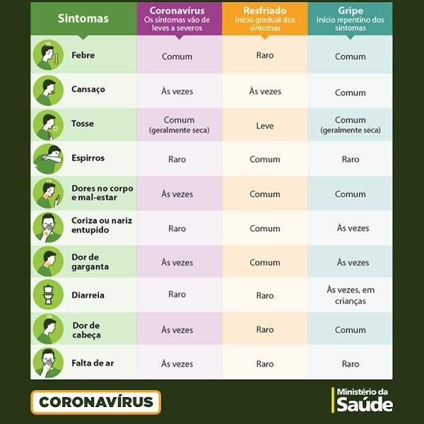

Em 11 de fevereiro de 2020, a Organização Mundial da Saúde anunciou um nome oficial para a doença que está causando o novo surto de coronavírus de 2019, identificado pela primeira vez em Wuhan, China. O novo nome dessa doença é doença coronavírus 2019, abreviado como COVID-19. Em COVID-19, 'CO' significa 'corona', 'VI' significa 'vírus' e 'D' significa doença. Anteriormente, esta doença era conhecida como "novo coronavírus de 2019" ou "2019-nCoV"
COVID-19 é causado por um coronavírus denominado SARS-CoV-2. Coronavírus são uma grande família de vírus que são comuns em pessoas e em muitas espécies diferentes de animais, incluindo camelos, gado, gatos e morcegos. Raramente, os coronavírus animais podem infectar pessoas e se espalhar entre elas. Isso ocorreu com o MERS-CoV e o SARS-CoV , e agora com o vírus que causa o COVID-19. O vírus SARS-CoV-2 é um betacoronavírus, como o MERS-CoV e o SARS-CoV.
A doença apresenta um espectro clínico variando de infecções assintomáticas a quadros graves. De acordo com a Organização Mundial de Saúde, a maioria (cerca de 80%) dos pacientes com COVID-19 podem ser assintomáticos ou oligossintomáticos (poucos sintomas), e aproximadamente 20% dos casos detectados requer atendimento hospitalar por apresentarem dificuldade respiratória, dos quais aproximadamente 5% podem necessitar de suporte ventilatório.
A transmissão acontece de uma pessoa doente para outra ou por contato próximo por meio de:


Os sintomas da COVID-19 podem variar de um resfriado, a uma Síndrome Gripal-SG (presença de um quadro respiratório agudo, caracterizado por, pelo menos dois dos seguintes sintomas: sensação febril ou febre associada a dor de garganta, dor de cabeça, tosse, coriza) até uma pneumonia severa. Sendo os sintomas mais comuns:
Para deixar mais claro, abaixo colocamos uma tabela para saber diferenciar gripe, resfriado e coronavírus. Confira:
Os exames laboratoriais específicos apresentam três tipos principais de aplicações que estão relacionadas ao estágio da infecção em que o paciente se encontra: A detecção precoce da exposição ao vírus, antes do aparecimento dos sintomas; o diagnóstico do quadro agudo e monitoramento da evolução clínica e o rastreamento da exposição ao SARS-CoV-2.
Os principais métodos e técnicas disponíveis atualmente para realização dos exames específicos podem ser classificados em dois grupos:
Para os pacientes que apresentam quadro agudo com suspeita de COVID-19, o padrão ouro para confirmação laboratorial indicado nos protocolos oficiais do Ministério da Saúde é o RT-PCR com amostra de swab de oro e nasofaringe, podendo também ser utilizado aspirado de nasofaringe, lavado traqueal, lavado bronco-alveolar e eventualmente escarro. A coleta de amostra deve ser realizada até o sétimo dia de início dos sintomas, mas preferencialmente até o terceiro para evitar a ocorrência de resultado negativo, devido a eliminação precoce do vírus.
O RT-PCR também pode ser utilizado para o monitoramento da evolução do quadro clínico, visto que um resultado negativo em paciente com resolução dos sintomas indica ausência de replicação viral e a possibilidade de encerramento do isolamento por não oferecer mais risco de contágio.
Os exames sorológicos buscam pelos anticorpos produzidos pelo corpo para combater o vírus. o DB fornece os testes de IgG, IgA e IgM isolados, realizado pela metodologia ELISA, o IgG por quimioluminescência (CLIA) e Anticorpos Totais por eletroquimioluminescência (ECLIA). Os testes para Anticorpos Totais e para IgA vem demonstrando sensibilidade discretamente superior no diagnóstico do quadro agudo, iniciando positividade em torno do sétimo dia após o início dos sintomas enquanto o IgM pode aparecer no mesmo dia ou geralmente um dia após, e em algumas situações pode nem ser detectado. Os anticorpos IgG tem mostrado tendência de aparecimento mais tardio, podendo ser em torno de duas semanas após o início dos sintomas e em algumas situações até mais de um mês.
O rastreio da exposição prévia ao SARS-CoV-2 em indivíduos que não apresentaram nenhuma sintomatologia típica, ou naqueles que apresentaram sintomas, mas não realizaram a confirmação diagnóstica laboratorial no momento do quadro agudo, tem aplicação para a avaliação epidemiológica populacional da exposição, e para avaliação do status imune individual. Apesar de ainda não haver comprovação cientifica dessa hipótese, acredita-se que a presença dos anticorpos de memória possa promover proteção evitando a reinfecção ou recidiva. Nessa situação o exame mais indicado é a pesquisa de anticorpos IgG ou de Anticorpos Totais.